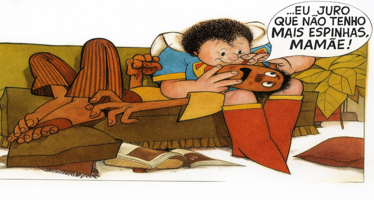

The Supermãe
Dona Clotilde, a famosa SuperMãe é o centro da narrativa — uma mãe com “superpoderes” emocionais.
Mas, ao contrário dos heróis tradicionais, seus poderes são voltados para o cuidado com o filho
(e o exagero dele).
Entre seus poderes estão a Superproteção: ela é capaz de “sentir” quando o filho está em perigo (ou apenas longe demais). Ela tem também o Ciúme materno: quando Carlinhos se aproxima de qualquer menina, ela ativa seu “superciúme” e entra em ação.
Sua narrativa é marcada por uma Melodrama cômico: suas falas são carregadas de emoção, exagero e frases como “meu filhinho amado, você vai me abandonar!”. O que deixa sua presença icônica.

Carlinhos
O filho da Supermãe, que vive sob sua sombra. Ele é o “marmanjo” que nunca conseguiu cortar o cordão umbilical. Ele raramente toma decisões por conta própria, uma clara representação de um jovem adulto que não consegue se libertar da influência materna.